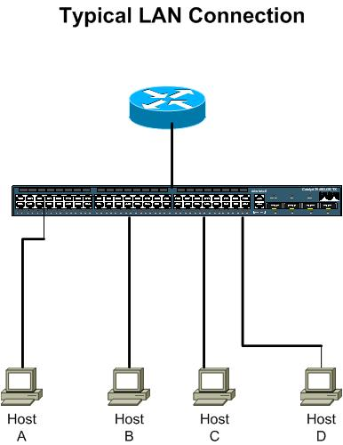
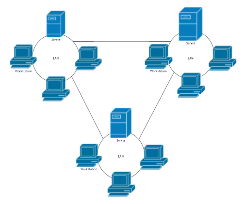

LAN: Local Area Network
A LAN connects network devices over a relatively short distance. A networked office building, school, or home usually contains a single LAN, though sometimes one building will contain a few small LANs (perhaps one per room), and occasionally a LAN will span a group of nearby buildings. In TCP/IP networking, a LAN is often but not always implemented as a single IP subnet.
WAN: Wide Area Network
As the term implies, a WAN spans a large physical distance. The Internet is the largest WAN, spanning the Earth.A WAN is a geographically-dispersed collection of LANs. A network device called a router connects LANs to a WAN.A WAN differs from a LAN in several important ways. Most WANs (like the Internet) are not owned by any one organization but rather exist under collective or distributed ownership and management.
